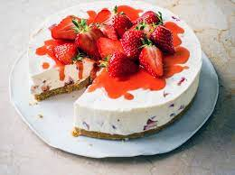

Cheesecake recipe

Description
Cheesecake is a sweet dessert made with a soft fresh cheese (typically cottage cheese, cream cheese, quark or ricotta), eggs, and sugar. It may have a crust or base made from crushed cookies (or digestive biscuits), graham crackers, pastry, or sometimes sponge cake. Cheesecake may be baked or unbaked, and is usually refrigerated.
Ingridients
Crust
-
250 g butter
-
100 g sugar
-
500 g flower
Cheesecake
-
910 g cream cheese
-
200 g sugar
-
160 g sour cream
-
pinch of salt
-
4 large eggs
Steps
-
Preheat oven to 325F (160C).
-
Mix butter with flower to make a crust. Pour 100g of sugar
-
In the bowl of a stand mixer or in a large bowl (using a hand mixer) add cream cheese and stir until smooth and creamy (don’t over-beat or you’ll incorporate too much air).
-
Add sugar and stir again until creamy.
-
Add sour cream and salt, and stir until well-combined. If using a stand mixer, make sure you pause periodically to scrape the sides and bottom of the bowl with a spatula so that all ingredients are evenly incorporated.
-
With mixer on low speed, gradually add lightly beaten eggs, one at a time, stirring just until each egg is just incorporated. Once all eggs have been added, use a spatula to scrape the sides and bottom of the bowl again and make sure all ingredients are well combined.
-
Pour cheesecake batter into prepared springform pan. To insure against leaks, place pan on a cookie sheet that’s been lined with foil.
-
Transfer to the center rack of your oven and bake on 325F (160C) for about 75 minutes. Edges will likely have slightly puffed and may have just begun to turn a light golden brown and the center should spring back to the touch but will still be Jello-jiggly. Don't over-bake or the texture will suffer, which means we all suffer.
-
Allow cheesecake to cool another 1-2 hours or until near room temperature before transferring to refrigerator and allowing to cool overnight or at least 6 hours. I remove the ring of the springform pan just before serving then return it to the pan to store. Enjoy!